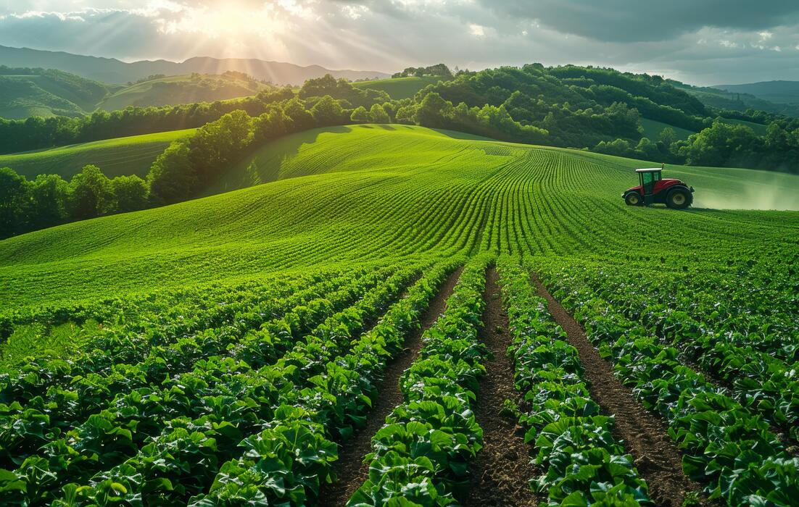
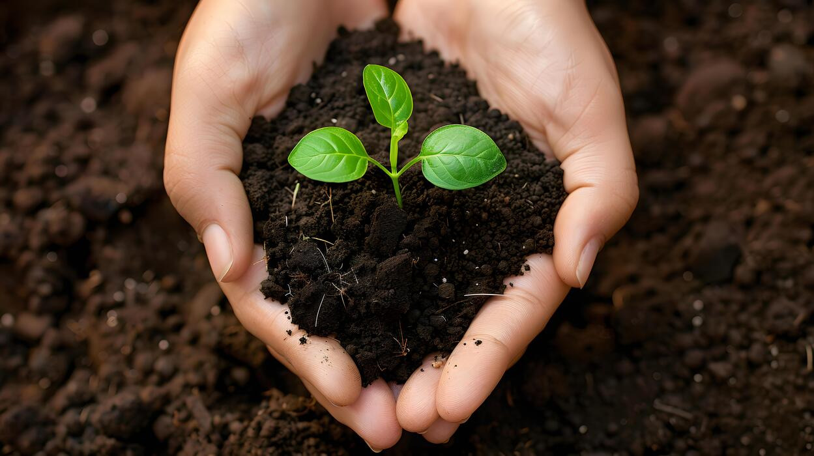
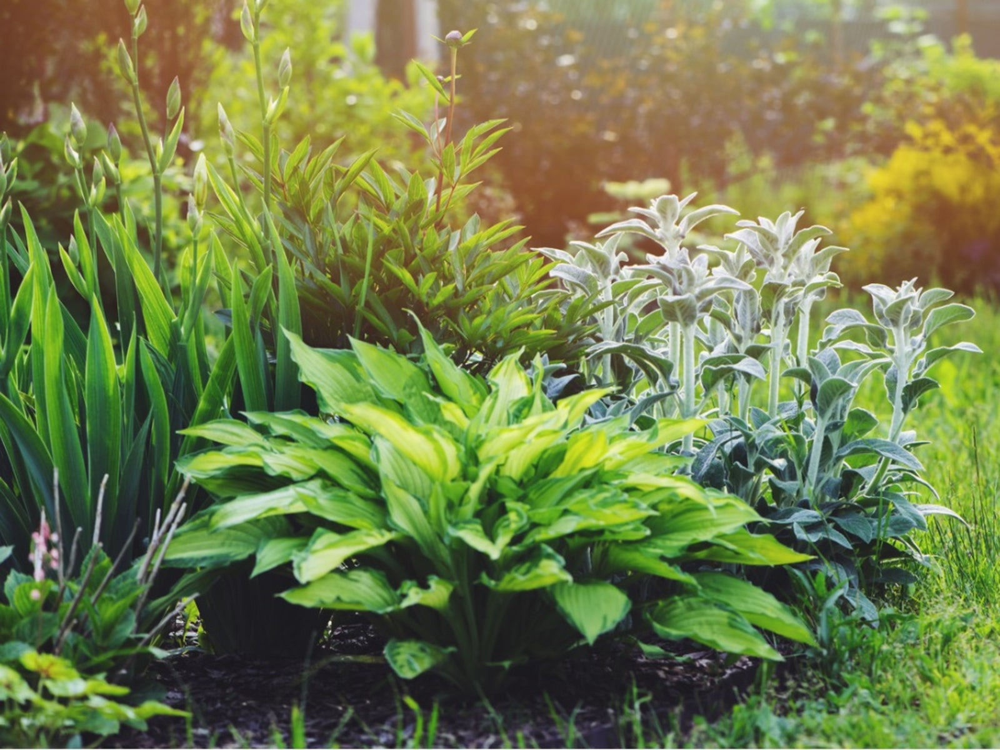

Our Mission
To provide an easy and helpful way for growers to choose crops that fit their soil and seasonal conditions. We aim to support healthier harvests and encourage more sustainable farming.
Learn more about falconXNasa, our purpose, and how we help growers make smarter planting decisions.
Back to Planner →falconXNasa is a crop compatibility planner that helps growers match the right crop with their soil and planting season.
Our goal is to make planting decisions simpler, more informed, and more sustainable. By bringing together soil information and seasonal guidance, we help growers plan with confidence.



To provide an easy and helpful way for growers to choose crops that fit their soil and seasonal conditions. We aim to support healthier harvests and encourage more sustainable farming.
We imagine a future where growing decisions are easier, more informed, and accessible to everyone. We hope to help communities use their land and natural resources wisely.
Simple tools for more thoughtful growing decisions.
See how well your selected crop matches your soil type and planting season.
Discover crop suggestions based on your selected growing conditions.
Use soil and seasonal information to make more informed planting choices.
Explore your soil, choose a planting season, and discover crops that may work for you.